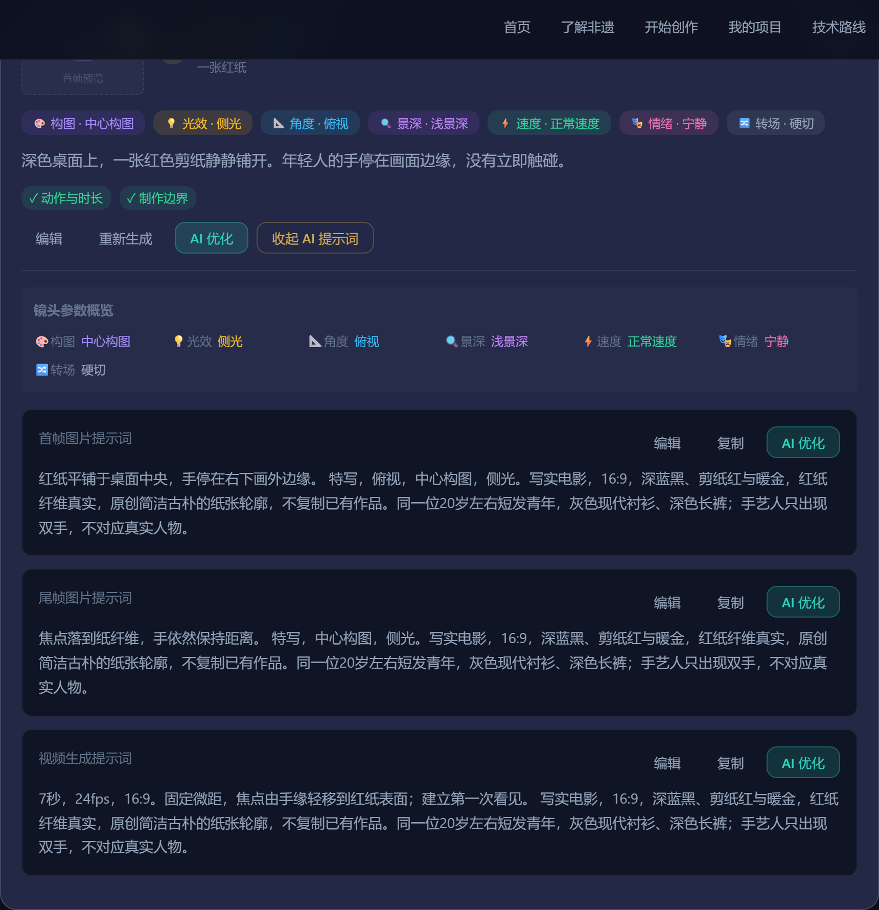

2026 · 第五届辽宁省大学生商业设计创意大赛
D 类 · UI / 交互设计
辽 宁 非 遗 · 数 字 影 像 创 新
辽韵 AI 导演台
辽宁非遗数字影像创作系统
《一剪见闾山》 · 核心案例
剪纸（医巫闾山满族剪纸） · AI 数字影像创作案例
传 统 美 术 / Ⅶ - 16 · 辽 宁 省 锦 州 市
让传统文化不是被 AI 简单“画出来”，
而是被理解、被讲述、被继续创作。
辽韵 AI 导演台02 · 文化依据 / 用户问题
02 / 文化依据 · 用户问题
为什么做
医巫闾山满族剪纸？
正式项目名称剪纸（医巫闾山满族剪纸）
类别 / 编号传统美术 / Ⅶ-16
申报地区辽宁省锦州市
公布时间2006 年 · 第一批
项目级别国家级非物质文化遗产代表性项目
流传于辽西医巫闾山地区，造型简洁、纹样古朴，保留鲜明的东北满族人文特征与地方民俗文化信息——它不止是一张红纸，更是一整套地方生活的视觉语言。
01不了解文化资料与视觉灵感之间缺少事实边界
02不会讲故事文化主题难以转化为人物与情节
03不会分镜一个想法难以拆成可执行镜头
04不会写提示词文字创意与图片、视频生产脱节
真正的门槛，
是如何把理解变成表达。
事实来源：中国非物质文化遗产网 · 中国非物质文化遗产数字博物馆
https://www.ihchina.cn/project_details/13927.html
核验日期：2026-09-23。故事、人物与镜头属于原创创意层。
辽韵 AI 导演台03 · 交互逻辑 / 创作流程
03 / 交互逻辑 · 创作流程
我们的解决方案
让不会编剧、不会分镜、不会写 AI 提示词的人，
也能完成一部辽宁非遗短片的前期创作。
04
AI 分镜导演
拆解景别、构图、运镜与时间 —— 产品核心
05
首帧图片 Prompt
明确画面主体、位置、光线与材质
07
文化表达检查
区分文化事实、现代创意与待核验素材
这是 AI 辅助导演工作流，
不是普通聊天机器人。
辽韵 AI 导演台04 · 核心界面 / 进入创作
04 / 核心界面 · 进入创作
从一张红纸开始
《一剪见闾山》 · 医巫闾山满族剪纸 · AI 数字影像创作案例
数字化不是替代手艺，
而是让更多年轻人重新看见它。
01 · 系统首页 / 聚焦辽宁非遗与《一剪见闾山》
辽韵 AI 导演台05 · 核心界面 / 分镜组织
05 / 核心界面 · 分镜组织
把一个故事拆成
8 个可执行镜头
一个故事，60 秒。从观看，到理解，再到记录。
01一张红纸
02纸上的纹样
03剪刀落下
04纸里的山
05旧图形，新观看
06让纸活起来
07重新记录
08一剪见闾山
从文案，
走向生产结构。
输出故事、角色、场景与镜头参数，形成可以继续进入图片与视频生产的创作资产。
当前为前期方案，画面生成与成片制作需在后续工具中完成。
辽韵 AI 导演台06 · 核心界面 / 提示词
06 / 核心界面 · 提示词
从“想法”到
AI 可生成提示词
把创意进一步转化成可以继续进入图片和视频生产的结构化描述。

01 · 一张红纸 / 单镜头展开 · 参数与三条提示词
画面描述深色桌面上，一张红色剪纸静静铺开。手停在画面边缘。
景别特写
构图中心构图
运镜固定 · 微距
光线侧光
角度俯视
时长7 秒
可生成性预估（制作前人工评估）94 / 100
短动作、稳定结构与后期合成建议写入提示词；评分为人工预估，尚未进行实际视频生成测试。
首帧图片提示词红纸平铺于桌面中央，手停在右下画外边缘。特写，俯视，中心构图，侧光。写实电影，16:9，深蓝黑、剪纸红与暖金，红纸纤维真实，原创简洁古朴的纸张轮廓，不复制已有作品。同一位 20 岁左右短发青年，灰色现代衬衫、深色长裤；手艺人只出现双手，不对应真实人物。
尾帧图片提示词焦点落到纸纤维，手依然保持距离。特写，中心构图，侧光。写实电影，16:9，深蓝黑、剪纸红与暖金，红纸纤维真实，原创简洁古朴的纸张轮廓，不复制已有作品。同一位 20 岁左右短发青年，灰色现代衬衫、深色长裤；手艺人只出现双手，不对应真实人物。
视频生成提示词7 秒，24fps，16:9。固定微距，焦点由手缘轻移到红纸表面；建立第一次看见。写实电影，16:9，深蓝黑、剪纸红与暖金，红纸纤维真实，原创简洁古朴的纸张轮廓，不复制已有作品。同一位 20 岁左右短发青年，灰色现代衬衫、深色长裤；手艺人只出现双手，不对应真实人物。
让创意直接进入下一步图像与视频生产。
当前为前期制作方案，实际图像与视频生成仍由后续生成工具完成。可生成性评分 94/100 为制作前人工预估。
辽韵 AI 导演台07 · 核心界面 / 文化边界
07 / 核心界面 · 文化边界
AI 创作，也需要文化边界
文化事实层
- 正式名称剪纸（医巫闾山满族剪纸）
- 编号 / 类别Ⅶ-16 · 传统美术
- 申报地区辽宁省锦州市
- 公布批次2006 年 · 第一批
- 项目级别国家级非物质文化遗产代表性项目
- 官方资料ihchina.cn · 核验于 2026-09-23
现代创意层
- 人物当代观看者 / 记录者（虚构角色）
- 故事从看见红纸，到主动记录
- 镜头8 镜头 · 60 秒 · 前期创作方案
- 转场匹配剪辑 · 叠化 · 硬切
- 数字视觉红纸、镂空、窗光与山影
AI 可以参与创意，
但不能替代文化事实核验。
避免不同地区文化混用 · 避免猎奇化 · 避免虚构传承人 · 不随意解释未经核验的纹样含义
《一剪见闾山》中的现代人物与故事属于原创艺术表达，并非历史人物复原。
辽韵 AI 导演台08 · 应用价值 / 数字传播
08 / 应用价值 · 数字传播
让辽宁非遗拥有
新的数字表达入口
辽宁文旅高校课程大学生 AIGC 创作文化馆 / 博物馆非遗数字传播青年文化教育
从一张纸开始，
让更多年轻人，
重新看见辽宁非遗。
《一剪见闾山》 · 辽韵 AI 导演台
以文化事实为起点，以原创叙事为路径，以可执行镜头为成果。